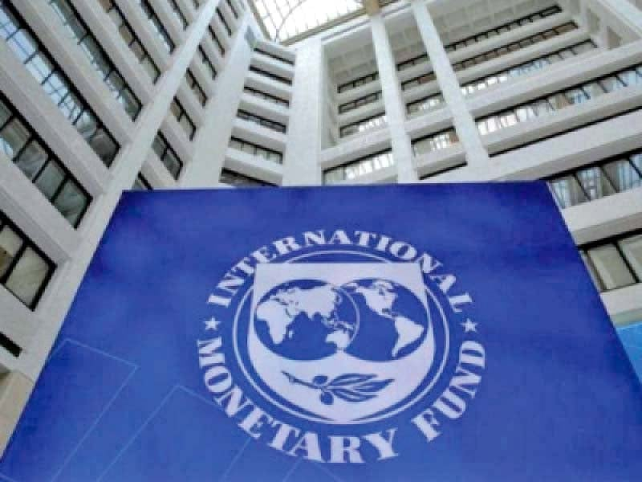

Who uses IMF for geopolitical objectives?

An Interesting Story:
Once, when the Asian financial crisis hit Indonesia, it sought help from the International Monetary Fund (IMF). This help came with certain conditions that were imposed by the IMF, which further led to political instability and social unrest in Indonesia. This example shows how powerful the IMF can be in shaping the political and economic landscape of a country.
Examples:
The IMF was created in 1944 to help stabilize the global economy in the aftermath of World War II. However, over the years, the IMF has been criticized by many for using its power to further the political interests of its member countries. Some examples of how the IMF has been used for geopolitical purposes are:
- In the 1970s and 80s, the US used its position as the dominant member of the IMF to exert pressure on developing countries in Latin America and Africa to adopt free-market policies.
- In 1991, the US and its allies used the IMF to pressure the Soviet Union to adopt economic reforms.
- In 2002, the US used the IMF to pressure the Argentine government to implement economic reforms that were favorable to US corporations.
Case Studies:
A more recent example of how the IMF has been used for geopolitical purposes can be seen in the case of Ukraine. In 2014, Ukraine was facing a severe economic crisis and sought help from the IMF. The IMF agreed to provide Ukraine with a bailout package, but this package came with conditions that were designed to further the interests of the US and EU. One of the conditions imposed by the IMF was the implementation of austerity measures, which led to cuts in social spending and a decline in the standard of living for many Ukrainians. Another condition was the adoption of economic reforms that were designed to benefit US and EU corporations. These reforms included the privatization of state-owned companies and the opening up of the Ukrainian economy to foreign investment. The IMF's involvement in Ukraine has been criticized by many as an example of how the organization is being used to further the geopolitical interests of its member countries. However, the IMF has defended its actions, saying that its primary goal is to promote economic stability and growth.
Conclusion:
In conclusion, the IMF is a powerful organization that has the ability to shape the political and economic landscape of its member countries. While its primary goal is to promote economic stability and growth, the IMF has been criticized for using its power to further the geopolitical interests of its member countries. Some of the ways in which the IMF has been used for geopolitical purposes include pressuring developing countries to adopt free-market policies and promoting economic reforms that benefit powerful corporations and Western countries. The case of Ukraine is a recent example of how the IMF has been used to further the geopolitical interests of the US and EU. In summary, the IMF can be a double-edged sword, capable of providing much-needed financial assistance to struggling countries but also potentially exacerbating existing political and economic tensions. Reference urls: https://www.imf.org, https://www.brookings.edu, https://www.aljazeera.com Hashtags: #IMF #geopolitics #economicpolicy #Ukraine #austerity SEO Keywords: IMF, Geopolitical Objectives, Developing Countries, Economic Reform, Ukraine Category: World Affairs
Curated by Team Akash.Mittal.Blog
Curated by Team Akash.Mittal.Blog
Share on Twitter Share on LinkedIn